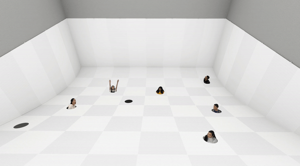
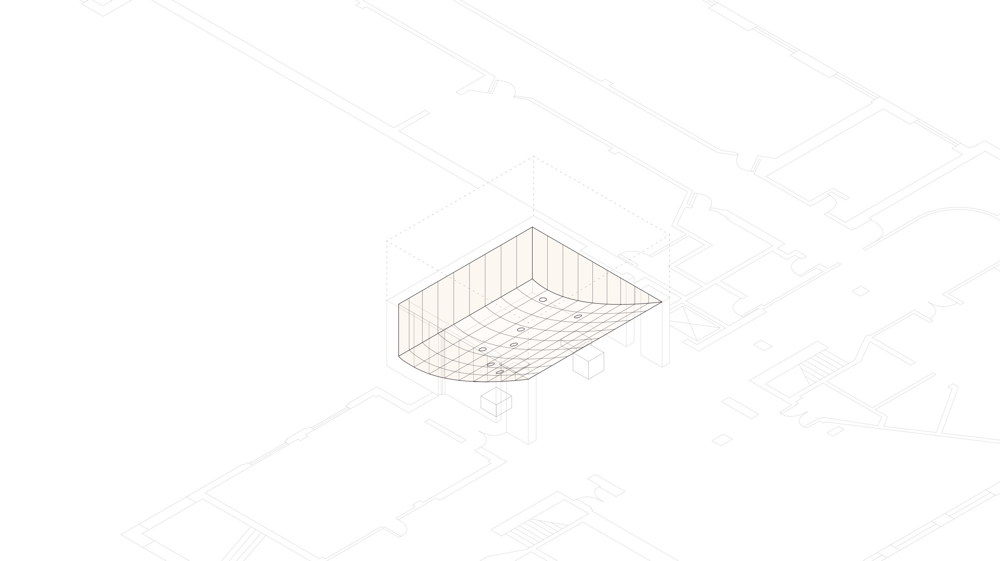
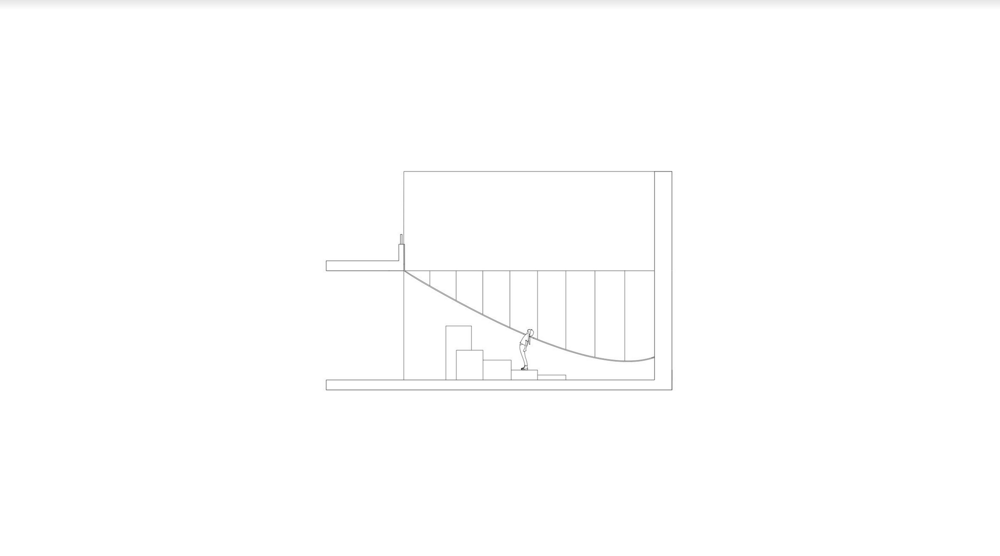

click to go back
white/off-white

Beril, Stacy, Shree, Anna (all Architecture '20), Alec (Sociology '20),
and I created white/off-white for the 2020 Anderson School of Architecture
Archi-Arts Charette. The theme of the Charette was duo. white/off-white
is a suspended sheet of checkered fabric that
breaks up the room into two spaces offering a duo of experiences (above/below),
and views (outside/inside) while also exploring the subtlety of duality
— the two colors (white/off-white)
are indistinguishable until brought
together.

